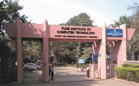

Let's look at some random pictures!
from pict.edu
Pune Institute of Computer Technology (popularly known as PICT), is an elite academic Institute located in Pune, “The Oxford of the East.” Since our establishment in 1983, PICT has been revolutionizing the education sector by nurturing skilled and industry-ready engineers. PICT believes in value-based quality education in Information and Communication Technology (ICT). PICT constantly endeavours to achieve higher levels of technical ingenuity through our undergraduate (UG) programmes in Computer Engineering (CE), Electronics & Telecommunication Engineering (E&TE), and Information Technology (IT). Our postgraduate (PG) programmes in Computer Engineering, Data Science, Electronics & Communication (Wireless Communication Technology), and Information Technology promote a high-quality research environment in emerging technological domains. PICT is a Savitribai Phule Pune University (SPPU) recognized Research Center in Computer Engineering and Electronics & Telecommunication Engineering.

Pune Institute of Computer Technology (popularly known as PICT), is an elite academic Institute located in Pune, “The Oxford of the East.” Since our establishment in 1983, PICT has been revolutionizing the education sector by nurturing skilled and industry-ready engineers. PICT believes in value-based quality education in Information and Communication Technology (ICT). PICT constantly endeavours to achieve higher levels of technical ingenuity through our undergraduate (UG) programmes in Computer Engineering (CE), Electronics & Telecommunication Engineering (E&TE), and Information Technology (IT). Our postgraduate (PG) programmes in Computer Engineering, Data Science, Electronics & Communication (Wireless Communication Technology), and Information Technology promote a high-quality research environment in emerging technological domains. PICT is a Savitribai Phule Pune University (SPPU) recognized Research Center in Computer Engineering and Electronics & Telecommunication Engineering.
Pune Institute of Computer Technology (popularly known as PICT), is an elite academic Institute located in Pune, “The Oxford of the East.” Since our establishment in 1983, PICT has been revolutionizing the education sector by nurturing skilled and industry-ready engineers. PICT believes in value-based quality education in Information and Communication Technology (ICT). PICT constantly endeavours to achieve higher levels of technical ingenuity through our undergraduate (UG) programmes in Computer Engineering (CE), Electronics & Telecommunication Engineering (E&TE), and Information Technology (IT). Our postgraduate (PG) programmes in Computer Engineering, Data Science, Electronics & Communication (Wireless Communication Technology), and Information Technology promote a high-quality research environment in emerging technological domains. PICT is a Savitribai Phule Pune University (SPPU) recognized Research Center in Computer Engineering and Electronics & Telecommunication Engineering.